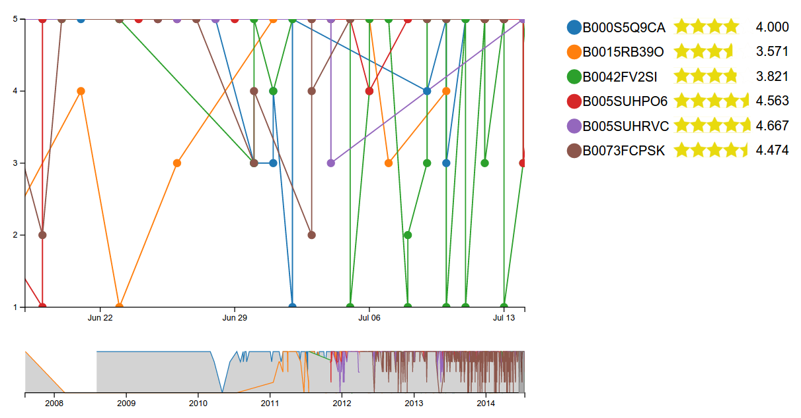

For this view we consider the time, you need to know the date of the views of users, the chart we have for the Y axis represent the rating values that have the reviews and the X axis have a timeline that has the dates of opinions. To the timeline is supported to be able to look from year to the same second time, this is why it may happen that an opinion be on the same date with hours and even minutes, but it is almost impossible is a same second